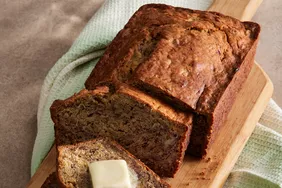

Banana Bread

Description
Banana bread is a type of sweet bread made from mashed bananas.It is often a moist and sweet quick bread but some recipes are yeast raised.
Ingredients
- Sugar
- Flour
- White wheat flour
- Teaspoon of cinnamon
- chopped nuts or dried fruit
- chocalate chips
Steps
- Swap out all of part of the sugar for light brown sugar.
- Replace up to half of the flour with white whole wheat flour
- Add 1 teaspoon of cinnamon
- Mix in 1/2 cup of chopped nuts or dried fruits
- Add 1/2 cup chocalate chips
Go back to homepage